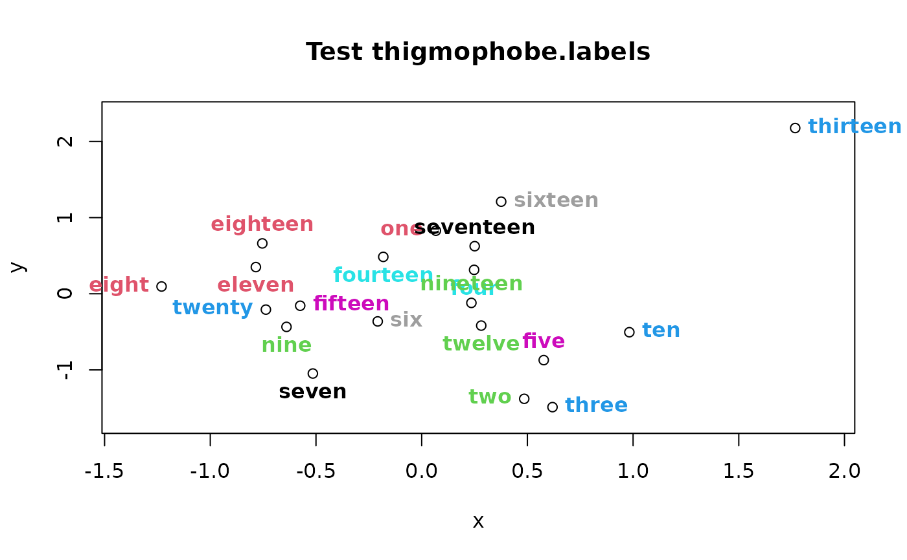

Place labels away from the nearest point
thigmophobe.labels.Rdthigmophobe.labels places labels adjacent to each point, offsetting each label in the direction returned by thigmophobe.
Arguments
- x,y
Numeric data vectors or a list with two components. Typically the x/y coordinates of plotted points.
- labels
A vector of strings that will be placed adjacent to each point. Defaults to the indices of the coordinates.
- text.pos
An optional vector of text positions (see text).
- ...
additional arguments are passed to text
.
Details
Typically used to automatically place labels on a scatterplot or similar to avoid overlapping labels. thigmophobe.labels will sometimes place a label off the plot or fail to separate labels in clusters of points. The user can manually adjust the errant labels by running thigmophobe first and saving the returned vector. Then modify the position values to place the labels properly and pass the edited vector to thigmophobe.labels as the text.pos argument. This takes precedence over the positions calculated by thigmophobe.
thigmophobe will fail with only two labels, as it can't figure out the nearest neighbors. If you really want to use this with two labels, just eyeball the plot and work out in which direction the labels will go. Then pass the directions to thigmophobe.labels as the text.pos argument. When all else fails, look to placeLabels.
Both pointLabel in the maptools package and spread.labs in the TeachingDemos package use more sophisticated algorithms to place the labels and are worth a try if thigmophobe just won't get it right.
Author
Jim Lemon (thanks to Stephen Milborrow for finding the single point bug and Erik Aronesty for finding the two point problem.)
Examples
x<-rnorm(20)
y<-rnorm(20)
xlim<-range(x)
xspace<-(xlim[2]-xlim[1])/20
xlim<-c(xlim[1]-xspace,xlim[2]+xspace)
ylim<-range(y)
yspace<-(ylim[2]-ylim[1])/20
ylim<-c(ylim[1]-yspace,ylim[2]+yspace)
plotlabels<-
c("one","two","three","four","five","six","seven","eight","nine","ten",
"eleven","twelve","thirteen","fourteen","fifteen","sixteen","seventeen",
"eighteen","nineteen","twenty")
plot(x=x,y=y,xlim=xlim,ylim=ylim,main="Test thigmophobe.labels")
# skip the almost invisible yellow label, make them bold
thigmophobe.labels(x,y,plotlabels,col=c(2:6,8:12),font=2)
